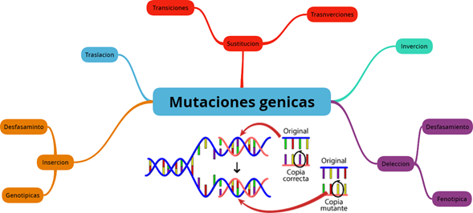
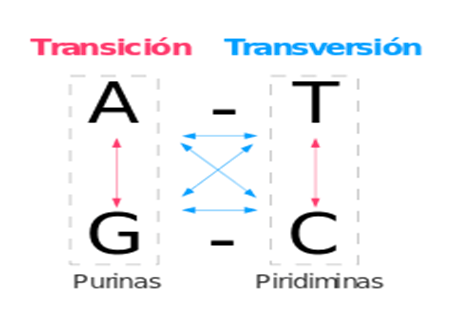
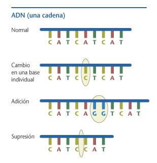

Las mutaciones génicas son las que alteran la secuencia de nucleótidos de un solo gen, por lo que también se denominan puntuales. Se pueden producir por:

figura 2. Mutaciones que alteran las secuencias de nucleotidos
Sustitución de pares de bases. por ejemplo, en lugar de un nucleótido de timina hay uno de citosina. Se producen al cambiar en una posición una base nitrogenada por otra (son las bases nitrogenadas las que distinguen los nucleótidos de una cadena). Suponen alrededor del 20% de las mutaciones génicas. Pueden ser de dos tipos:
Transiciones. Cuando se sustituye una base púrica por otra púrica (adenina por guanina y viceversa) o una pirimidínica por otra pirimidínica (citosina por timina y viceversa).
Transversiones. Cuando se sustituye una base púrica por otra pirimidínica, o viceversa.

Pérdida de nucleótidos. Sea por: Inserción de nuevos nucleótidos. Inversión de nucleótidos. Translocación de pares de nucleótidos complementarios.
